C · 最大屈曲 5.5 秒
side
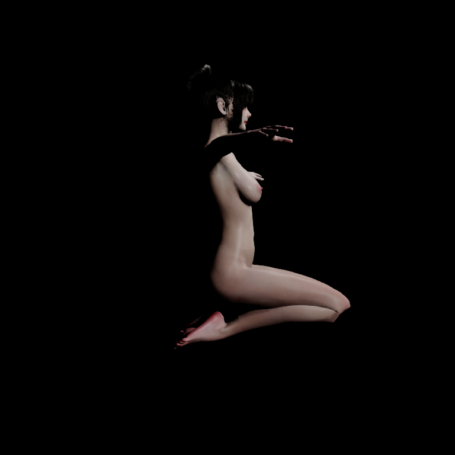
rear
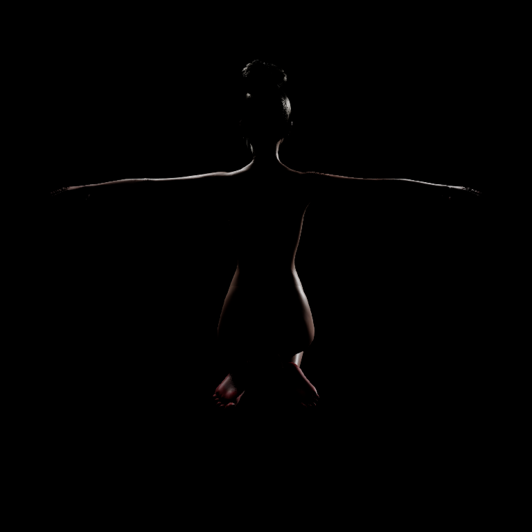
oblique
本轮测试真实达到约 155°，不再使用被限位截短的中等屈曲代替。正常 BP 的实际蒙皮、Corrective 和 Jiggle 继续运行；膝关节超限输入仅在独立录制工具内启用，髋与脚踝仍使用原有限位，生产 RigProfile 没有修改。
根移动保持平均踝关节高度，脚部为姿态配合。它是跪姿形变压力测试，尚非带地面接触和脚部 IK 的完整游戏动作。C 请求开启接触，M 关闭接触；状态逐帧显示。安全拒绝不会被算作接触通过。
新验证身份 · PIE 实际角度 · Editor 实跑 · A1 数据 · 最终编译
同一帧的主骨矩阵误差为 0，相机与根移动也完全一致。双腿 155° 保持帧，新版 S 相对 C 的腿部表面 RMS 为 0.465 cm、最大差为 1.147 cm。275 组同源重复点间距为 0；这只说明没有重复点裂缝，并不说明膝部形态自然。
真实截图中的膝前尖折仍在，两组都有；新版 S 还新增左右各一处硬折标记。其相邻面夹角：C 为 43.89° / 45.31°，新版 S 为 60.74° / 60.83°。单侧动作在相同左侧位置复现。没有把这个结果标为外形 PASS，也没有替换生产默认方案。
复用 A1 追踪这些边：最终权重层两组完全相同（约 129° / 131°）；开启静态链条后开始不同；Corrective 层产生上述 44° 对 61° 的结果；Jiggle 只改变不足 0.03°。因此这几处新增硬折来自静态链条与既有修形的组合，不是动态晃动幅度过大。具体三角形、源顶点与逐层角度。这是局部定位，不等于已经证明所有膝前形态问题的根因。
链条真实生效：左股直肌保持帧路径从 43.623 cm 变为 44.999 cm（+3.15%）。下一步应处理修形与新蒙皮算子的兼容性，再研究深屈曲的组织挤压；单纯继续加大链条幅度会放大问题。
接触对照限制：C 双腿序列仅 49/270 帧求解器活动，单腿为 78/180 帧；155° 保持帧两者均不活动。原始日志保留，不能据此宣称已经表现出有效 Chaos 大小腿挤压。Editor 与 PIE 均实跑达到 155°，主骨矩阵一致；但动态辅助骨并非逐帧相同：全程最大平移差 2.101 cm，出现在第 143 帧 R_Glute_Lower，腿部辅助骨最大矩阵项差 0.854。一致性失败记录。因此没有宣称动态一致性或解剖外形通过；双列视频中的 C/M 都来自 PIE，同世界条件比较。
左 C / 右 M（新版 S）；同一骨骼输入、相机和灯光。视频文字显示实际膝角度及接触状态。
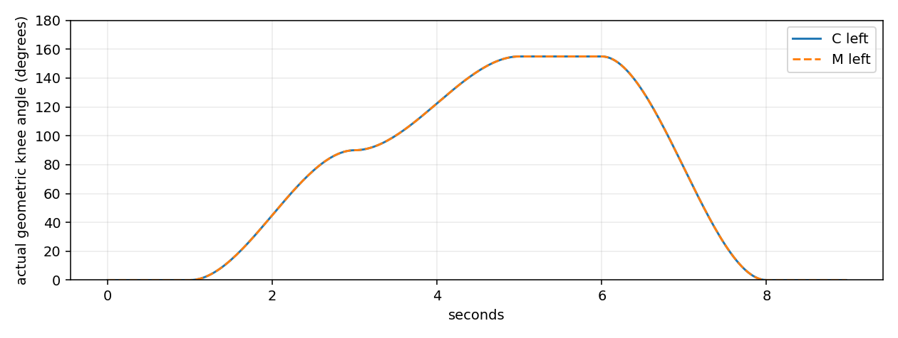
上 C / 下 M，同帧同裁剪；点击视频全屏查看运动。
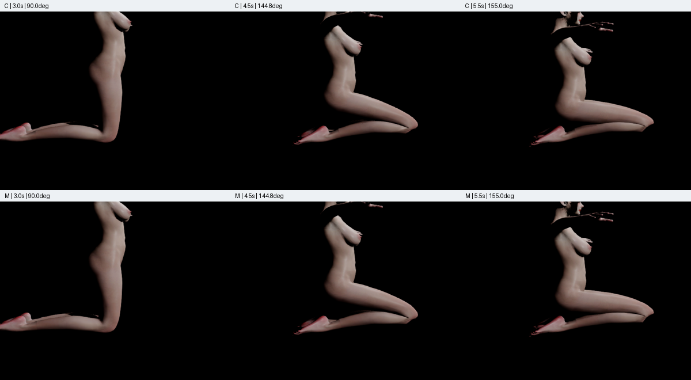
side

rear

oblique
side
rear
oblique
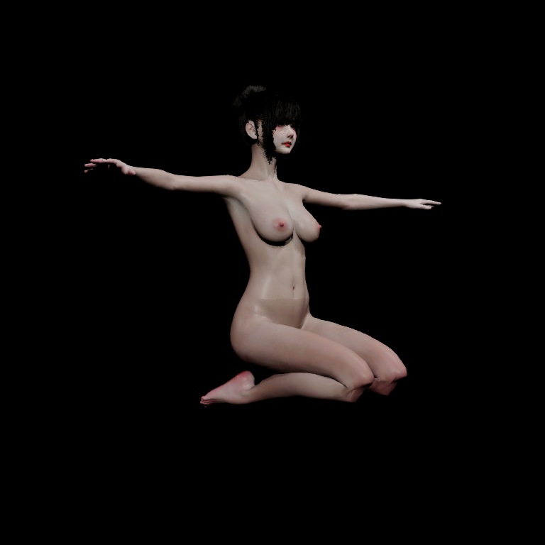
左 C / 右 M（新版 S）；同一骨骼输入、相机和灯光。视频文字显示实际膝角度及接触状态。
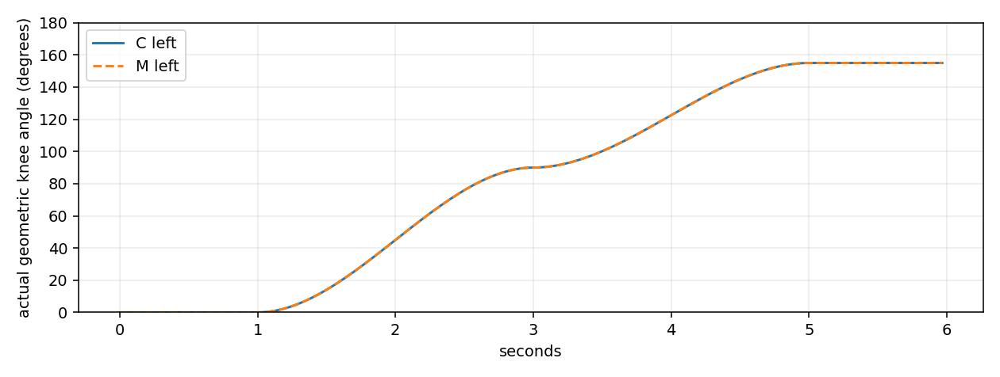
上 C / 下 M，同帧同裁剪；点击视频全屏查看运动。
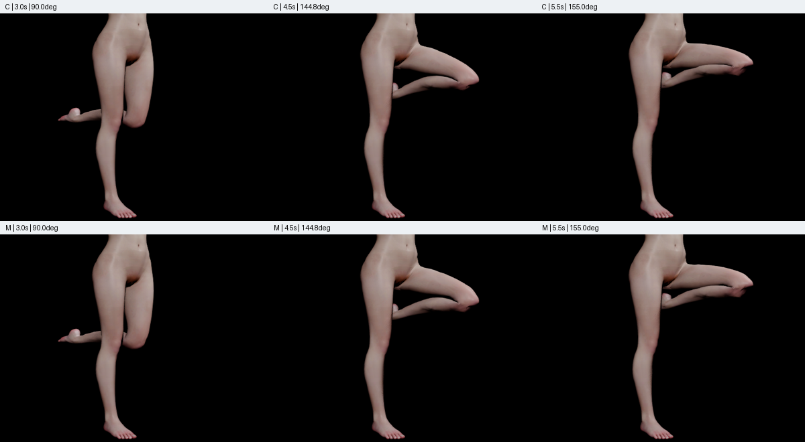
side
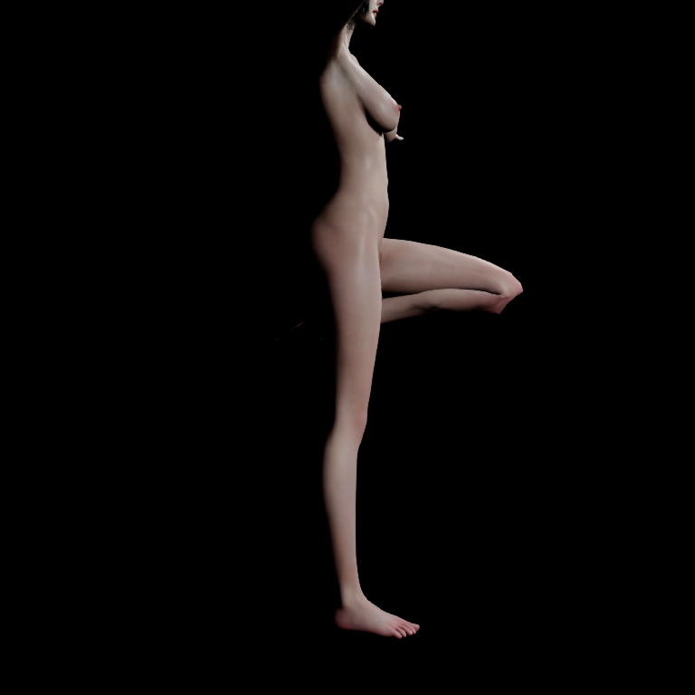
rear
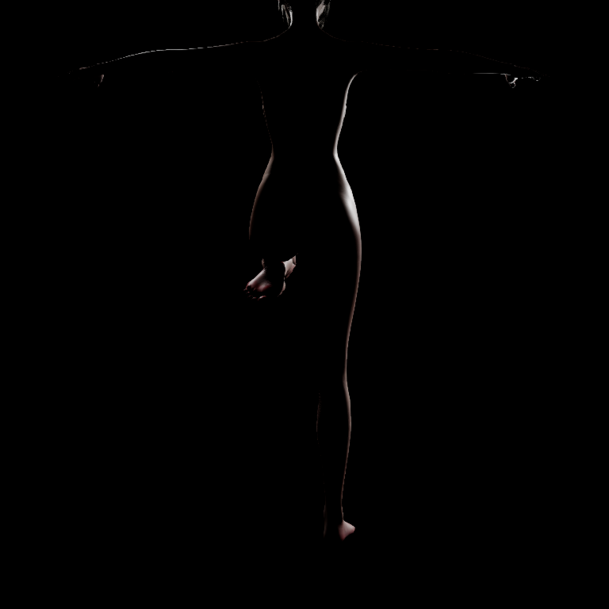
oblique
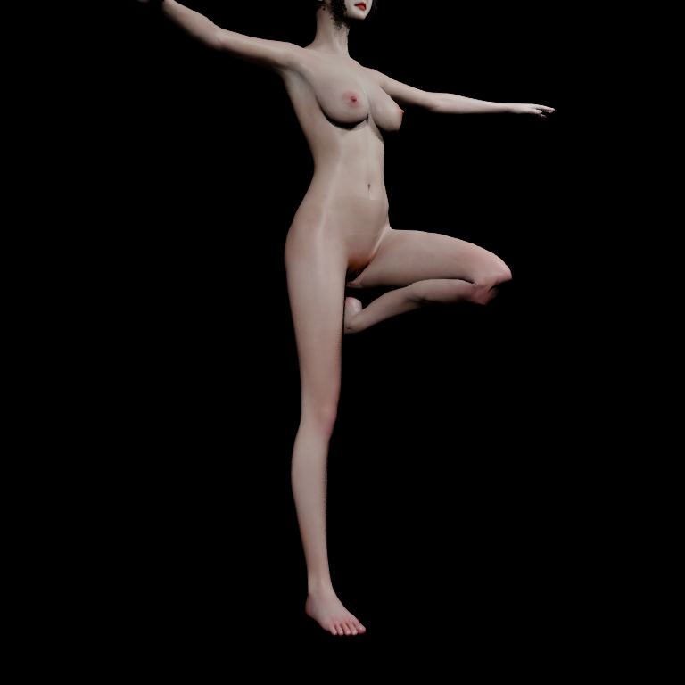
side
rear
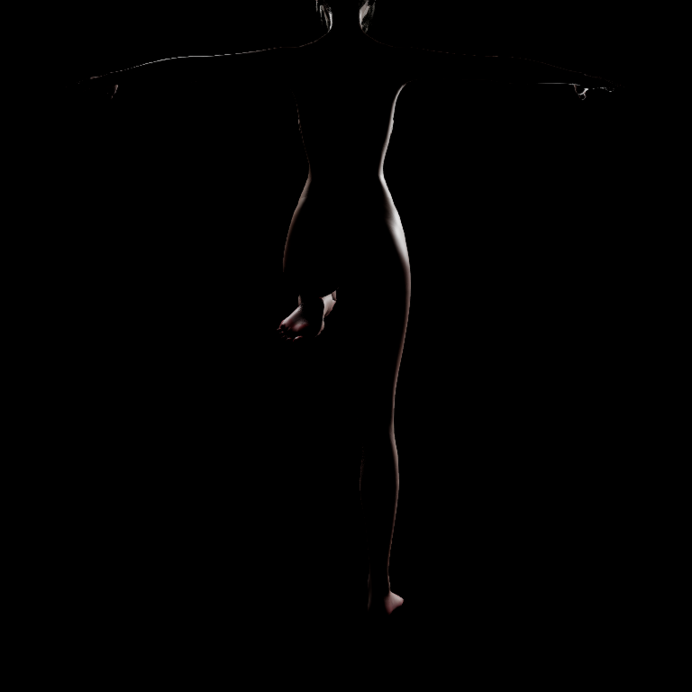
oblique
复用 A1，纳入主腿骨及辅助骨权重大于 5% 的顶点，覆盖刚性膝区与软组织过渡；按同源映射检查重复点；新增硬边标记为相对同姿态 C 的相邻面夹角增长超过 15° 且当前超过 45°。相对面法线反向不自动等于网格翻转。数据为骨骼/Morph/Jiggle 表面，未冒充最终 GPU 接触表面；接缝数值不能单独证明没有组织穿插。
| 动作 | 时间 | 重复点差 cm | 新增硬边标记 | 相对反向面标记 | 相对 C 最大变化 cm |
|---|---|---|---|---|---|
| deep-kneel | 1.5s | 0.000000 | 0 | 0 | 0.193 |
| deep-kneel | 4.5s | 0.000000 | 0 | 0 | 1.031 |
| deep-kneel | 5.5s | 0.000000 | 2 | 0 | 1.147 |
| single-flexion | 1.5s | 0.000000 | 0 | 0 | 0.196 |
| single-flexion | 4.5s | 0.000000 | 0 | 0 | 1.011 |
| single-flexion | 5.5s | 0.000000 | 1 | 0 | 1.144 |
30 FPS 是编码速度，不是实际游戏性能。旧姿态、历史报告和生产资产未覆盖。